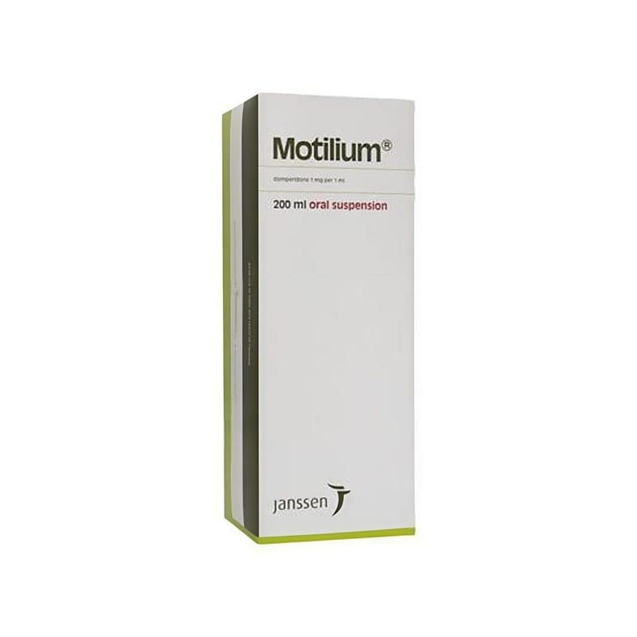

Motilium 1 mg/ml Oral Süspansiyon, 200 ml

Ne için kullanılır
KT · Bölüm 1• MOTILIUM Oral Süspansiyon, her mililitresinde 1 miligram domperidon içeren oral süspansiyon formundadır. Motilium Oral Süspansiyon, 200 mililitrelik şişeler içinde, ölçekli pipetiyle birlikte piyasaya sunulmaktadır. • MOTILIUM’un etkin maddesi olan domperidon, propulsifler adı verilen bir ilaç grubuna aittir. Bu gruptaki ilaçlar mide ve bağırsak hareketlerini artırarak düzenlerler. Böylelikle midenin boşalması kolaylaştırılmış olur ve midenin geriye, yemek borusuna doğru faaliyet göstermesi engellenir. • MOTILIUM erişkinlerde ve ergenlerde (12 yaş üstü ve 35 kg üzeri) mide bulantısı ve kusma durumlarının tedavisinde kullanılır.